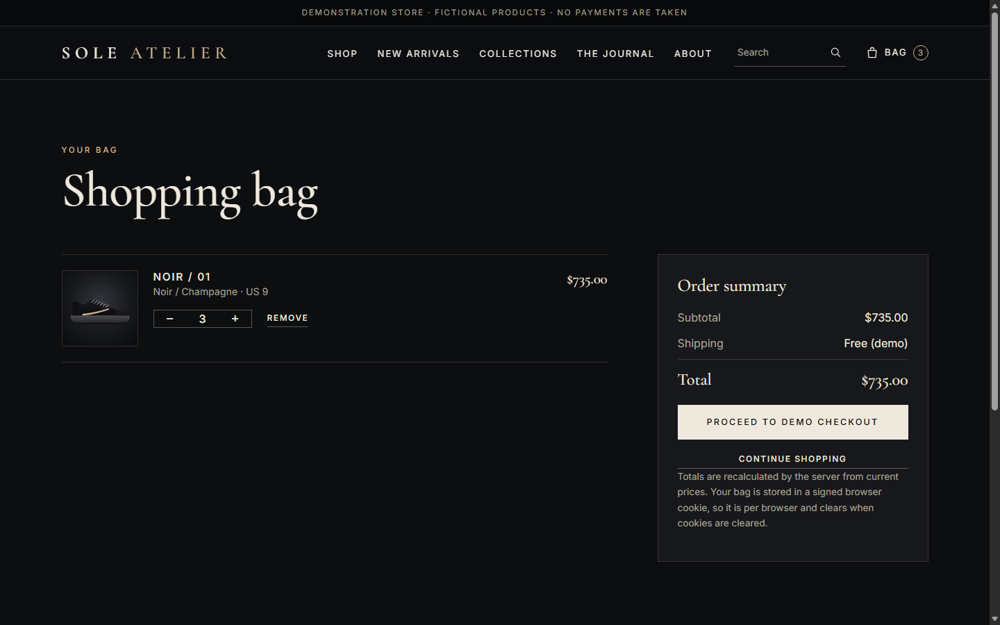

The application works locally and its server enforces prices, stock and input validation, proven by tests that fail when the code is deliberately broken. The AWS architecture (private subnets, security-group chaining, a least-privilege database user, no SSH, secrets outside code) is designed, documented and ready to build by hand, but none of it has been built or verified. This case study reports both halves separately and does not blur them.
The problem
Many “three-tier on AWS” demos stop at a default page behind a load balancer. That shows the parts can be connected, not that the design is safe or that an application on top behaves correctly. A real shop with per-size stock, a cart and orders raises real questions: how does the app reach a private database, who can read its password, what happens when the database is down, and what does a healthy target group actually prove?
Product concept
SOLE ATELIER presents a short, curated catalogue of six fictional sneakers with a dark, editorial storefront. Customers can browse, search, filter and sort, choose a size, manage a bag and place a demonstration order. No payment is taken and no card data is collected. Products, prices, stock and the “New Arrival” and “Limited Release” labels are demo data; product images are original illustrations, not photographs.
Goals
Public, application and database tiers across two Availability Zones
Access limited by routing, security groups and IAM, not by hope
Secrets out of code; app runs as a low-privilege database user
Behaviour proven by tests and recorded evidence
Cost known, bounded and torn down in order
Non-goals (deliberate)
Real payments, accounts or fulfilment
HTTPS, custom domain, WAF, CDN
Multi-AZ database, NAT per AZ
CI/CD, infrastructure as code, containers
Claims of production readiness
Everything on AWS is built manually in the Console. Automation comes after each resource can be explained.
Source: this repository only. Nothing here is a claimed deployment or metric.1 / 4
Technical case study · page 2 of 4
Architecture and decisions
Target design. Not deployed. The full-size diagram with CIDRs and route detail is architecture.png in the repository root.
Request flow
The browser sends HTTP 80 to an internet-facing Application Load Balancer in two public subnets (alb-sg).
The ALB forwards to FastAPI on EC2 in private subnets on 8080; app-sg accepts only alb-sg. No public IP, no SSH.
The app connects to RDS MySQL on 3306; db-sg accepts only app-sg. The database is not publicly accessible and its subnets have no internet route.
At startup the app reads two secrets with its IAM role, through one NAT gateway on 443.
The ALB health check calls /health, which does not query the database; /health/ready does.
Key decisions and trade-offs
Decision
Why
Trade-off accepted
FastAPI + Jinja2 + SQLAlchemy
Smallest stack with a real frontend, API and relational model; no build system
Server-rendered pages with light JavaScript
RDS for MySQL 8.4, single AZ
Managed backups, patching, encryption; orders and stock are relational
DB AZ failure means downtime (D-007)
Security groups reference groups
Access follows the tier, not IP addresses
Restricted egress can cause confusing failures
Dedicated sole_app DB user
DML only: injection cannot drop tables; admin used once for schema
Password not rotated; broad inside its schema
Secrets Manager + instance role
No secret in code, user data or screenshots
Recurring secret cost; startup depends on it
One NAT gateway, created late
Lowest cost that gives private egress
Single point of failure; bills hourly (D-006)
Liveness vs readiness checks
A database blip must not empty the load balancer
Instances can be “healthy” and return 503 (D-013)
HTTP only
No domain available for a certificate
Unencrypted to the ALB; cookie not Secure (D-009)
Full records with alternatives considered: docs/project/DECISIONS.md (D-001 to D-018).
Home page. Local, SQLite, fictional data, illustrated images.

Bag: totals recomputed by the server from the database.
Cart and order workflow
The cart lives in a signed session cookie as product id, size and quantity only. Names, prices and stock are re-read from the database on every request. Placing an order runs in one transaction: each line reserves stock with UPDATE ... WHERE stock >= qty, the order and its lines are inserted with name and price snapshots, and a client-supplied idempotency key makes a double submit return the original order. If any line cannot be reserved, every line rolls back and the customer sees a 409.
Controls and how each is tested
Control
Mechanism
Evidence
Server-side pricing
Extra fields refused; reprice on read; snapshot at order
Session token echoed in a header, constant-time compare
Missing, wrong and cross-session tokens rejected
Safe errors and logs
Generic messages; log lines carry ids, not customer data
Tests assert no host, user, input or PII leaks
No payment data
No card fields; unexpected fields rejected
Browser check and test
Data model
products (price NUMERIC(10,2), active flag, badge) · product_sizes (stock per size, never negative) · orders (unguessable reference, unique idempotency key, totals, address, status demo_pending) · order_items (name, size, quantity, unit price and line total snapshots).
Source: backend/, frontend/, tests/, docs/security.md. Screenshots are local runs, not AWS.3 / 4
Technical case study · page 4 of 4
Verification, problems found, and limits
What was run (local, 2026-10-15)
Check
Result
Evidence
Automated tests (SQLite, temp DB per test)
91 passed
E-015
Six deliberate bugs injected one at a time
6 of 6 caught
E-015
Real-browser UI test (Edge): flows, keyboard, structure, 390 px overflow
35 of 35
E-016
Colour contrast from the stylesheet
12 of 12 AA
E-020
Dependency scan (pip-audit) and clean-room install
none known; 91 pass
QUALITY_REVIEW
MySQL/RDS, real concurrency, other browsers, screen readers, anything on AWS
Not tested
n/a
Problems found and fixed
An app = create_app() at import created a database file during tests. Fixed with an application factory.
A headless-browser “mobile” screenshot was a cropped wider layout. Fixed with real device emulation and an overflow check.
A mutation check showed the oversell path is covered by only one test class; recorded as a weakness.
The first design had the app using the database admin account. Replaced by a dedicated low-privilege user (D-008).
Review of my own RDS guide found the schema command would fail for the Session Manager user; corrected to run as the service account (still untested).
Demo-only, and what changes for a real shop
Demo only: checkout without payment, stock reservations that never expire, a browser-held cart, no accounts, no migrations tool. Before real use: HTTPS and a domain, WAF and rate limiting, Multi-AZ RDS and a NAT per AZ, server-side carts and accounts, a payment provider so card data never touches the servers, Alembic migrations, rotated credentials, log shipping and alarms, then infrastructure as code.
Evidence matrix
Claim
Status
Missing
Application behaves as designed (local)
Verified
Your own re-run (E-019)
Network isolation, SG chain, private RDS (E-003 to E-007)
Planned
All AWS screenshots and tests
End-to-end through ALB and RDS (E-008, E-009)
Planned
Deployment and test output
Self-healing and teardown (E-012, E-014)
Planned
Tests and billing check
Release assessment: READY WITH DOCUMENTED LIMITATIONS, as an honest in-progress project: a tested application plus a documented AWS design. It does not yet demonstrate hands-on AWS skill; that needs the evidence in the plan. Full gate review: docs/project/QUALITY_REVIEW.md.